1. Introduction
This threat model covers decentralized credentials for people, especially high-assurance credentials issued by governments. It starts from credential flows, with particular attention to credential presentation.
Note: Identity & the Web uses Verifiable Digital Credentials as a broader term for credential ecosystems whose credentials can be digitally verified [IDENTITY-WEB-IMPACT]. This threat model uses decentralized credentials and verifiable digital credentials as synonyms for the scoped model.
Those credentials are part of the identity ecosystem described in the W3C Team report Identity & the Web [IDENTITY-WEB-IMPACT]. That report identifies five layers: Layer 5, Trust Frameworks and Ecosystems; Layer 4, Applications, Wallets, Products; Layer 3, Credential Layer; Layer 2, Agent Frameworks and Infrastructure; and Layer 1, Identifiers and Namespaces. The current threat model focuses on Layer 3, the Credential Layer. The other layers remain in scope when they affect threats, responses, assumptions, or remaining threats.
Government-issued verifiable credentials sit inside a socio-technical system: technical components, people, organizations, processes, incentives, and rules all interact. A credential flow can satisfy a security or privacy property in a specific interaction, while still causing broader harms when the system is used, misused, abused, deployed, or governed in harmful ways. For that reason, this threat model includes socio-technical threats in addition to the usual security and privacy threats. This aligns with the need identified in the joint work on rights-respecting digital credentials: to assess societal and human-rights impacts, develop threat and harms models, and identify mitigations for high-assurance credential systems.
The immediate trigger was W3C discussion about adding the Digital Credentials API [DIGITAL-CREDENTIALS] to the Federated Identity Working Group. Digital Credentials defines an API enabling user agents to mediate communication between a website that requests evidence and holder software, such as a wallet, which holds the evidence. The credential-flow model used here also applies to verifiable credentials across architectures, profiles, deployment patterns, and governance contexts. It is broader than wallet-specific work such as Protecting Digital Identity Wallet: A Threat Model in the Age of eIDAS 2.0 [PROTECTING-DIGITAL-IDENTITY-WALLET], which focuses on the European Digital Identity Wallet context.
The result is intended as input for later architecture, profile, implementation, and deployment work.
1.1. Terminology
Terminology comes from Identity & the Web [IDENTITY-WEB-IMPACT] and Verifiable Credentials Data Model v2.0 [VC-DATA-MODEL-2.0]. The short definitions below are included for readability. The cited documents remain the source definitions.
- identity
- The characteristics by which a person, organization, device, service, website, or other entity can be recognized in a given context. Identity is broader than a login name, account, credential, or identifier.
- identifier
- A specific piece of information used to recognize or refer to an entity. An identifier can refer to an identity, but it is not the identity itself.
- claim
- An assertion made about a subject. Claims can describe attributes, properties, qualifications, status, or other facts asserted by an issuer.
- credential
- A set of one or more claims made by an issuer. A credential can include metadata, such as the issuer, validity period, verification material, or status information.
- verifiable credential
- A tamper-evident credential whose authorship can be cryptographically verified. Verifiability does not mean that the underlying claims are true.
- presentation
- Data derived from one or more verifiable credentials and shared with a specific verifier.
- verifiable presentation
- A tamper-evident presentation whose authorship can be checked through cryptographic verification. A verifiable presentation can include credentials, selected claims, or data synthesized from credentials, depending on the credential format and protocol.
- subject
- The person, organization, device, service, or other thing about which claims are made.
- holder
- The role that possesses one or more verifiable credentials and can generate verifiable presentations from them. A holder is often, but not always, the subject of the credentials they hold.
- issuer
- The role that asserts claims about one or more subjects, creates a verifiable credential from those claims, and transmits it to a holder.
- verifier
- The role that receives one or more verifiable credentials, optionally inside a verifiable presentation, for processing before relying on the claims.
- verifiable data registry
- A role a system can perform by mediating identifiers, verification material, schemas, status information, revocation registries, or other data needed to verify credentials.
- credential repository
- In this threat model, the credential repository is modeled as DS-01, Wallet Storage. The broader VCDM definition also includes storage vaults, file systems, wallets, and other software that stores credentials or protects access to them.
- verification
- The evaluation of whether a verifiable credential or verifiable presentation is authentic and current, including checks on conformance, securing mechanisms, and status information where present.
- validation
- The verifier’s evaluation of whether claims from a specific issuer satisfy the verifier’s policy or business requirements for a particular use.
1.2. Related Work
-
Building Consensus on the Role of Real World Identities on the Web
-
Protecting Digital Identity Wallet: A Threat Model in the Age of eIDAS 2.0
-
Secure and Reliable Digital Wallets: A Threat Model for Secure Storage in eIDAS 2.0 [THREAT-MODEL-SECURE-STORAGE]
-
A Threat Model for the W3C Digital Credentials API: An Initial Analysis [DC-API-THREAT-MODEL]
1.3. Methodology
The method is Shostack’s Four Question Frame for Threat Modeling [SHOSTACK-FOUR-QUESTION-FRAME]. The frame keeps the work tied to the system under analysis instead of starting from a fixed checklist of attacks. The work also follows the Threat Modeling Manifesto [THREAT-MODELING-MANIFESTO] as a set of values and principles: collaborative, iterative, practical, and focused on finding and fixing design issues rather than treating threat modeling as a compliance checkbox.
The first question, What are we working on?, anchors the analysis in the credential architecture: actors, credentials, data flows, stores, trust boundaries, and assumptions.
The second question, What can go wrong?, uses those flows and boundaries to find threats, threat actors, attacks, security and privacy failures, and pathways that can lead to socio-technical harms.
The third question, What are we going to do about it?, records mitigations, responsibility boundaries, assumptions, transfers, acceptances, and remaining threats.
The final question, Did we do a good enough job?, checks whether the model is specific, traceable, and ready to guide the next round of design, review, or implementation work.
The external frameworks and prompt sets listed below are prompts, not completeness criteria.
-
Ben Laurie’s privacy properties from Selective Disclosure [BEN-LAURIE-SELECTIVE-DISCLOSURE]
-
Microsoft’s Types of Harm, and the NDIS Harms framework adapted from it in Enhancing National Digital Identity Systems [NDIS-HARMS]
OSSTMM is used here as a control-oriented key for the "what can go wrong?" question in the four-question framework. For that check, the channel is COMSEC Data Networks and the vector is Internet/Web; other credential systems may need a different channel or vector, such as Wireless.
Here, OSSTMM asks whether a control is absent, fails in this context, or moves responsibility to another actor. Privacy is included in that check when it changes actors, flows, or trust boundaries.
2. What are we working on?
This model starts from the credential layer described in the introduction and uses the ecosystem overview in Verifiable Credentials Data Model v2.0 [VC-DATA-MODEL-2.0] as its baseline. The system under analysis is defined without assuming a single credential format, wallet architecture, transport protocol, governance model, or presentation ceremony.
2.1. Scenario
The scenario modeled here is the baseline credential-layer flow. The baseline ecosystem roles come from Verifiable Credentials Data Model v2.0 [VC-DATA-MODEL-2.0]:
-
Subject: the person, organization, device, service, or other thing described by the claims.
-
Holder: possesses credentials and can generate presentations. A Holder is often, but not always, the Subject of the credential.
-
Issuer: asserts claims, creates a credential from those claims, and transmits the credential to a Holder.
-
Verifier: receives credentials, optionally inside a presentation, and processes them before relying on the claims.
-
Verifiable Data Registry (VDR): provides identifiers, verification material, schemas, revocation registries, or other data needed to verify credentials.
The scenario uses the common case in which the Holder is also the Subject. This is a baseline modeling assumption. For this DFD, the scenario also assumes that the person acting as the Holder interacts with their Wallet / Credential App through the browser or user agent. If the Holder and Subject are different, if the Holder interacts with wallet software outside browser mediation, or if a credential can be delegated, the deployment model should add the Subject, delegated Holder, direct wallet interaction, and any authority-granting or revocation process as separate ecosystem roles when those roles affect issuance, presentation, recovery, revocation, or reliance decisions.
The trust relationships among these ecosystem roles are part of the source specification. Verifiable Credentials Data Model v2.0 [VC-DATA-MODEL-2.0] includes a Software Trust Boundaries section, which describes trust relationships among ecosystem roles and the software that operates on their behalf. For that reason, this scenario shows trust boundaries and treats Holder, Issuer, Verifier, and VDR as separate control points unless a deployment explicitly combines them.
Because one organization can play several roles, the scenario keeps the roles separate when that separation helps expose data flows, trust boundaries, or responsibility boundaries.
This model treats ecosystem roles separately from the software that acts on their behalf. Software often exercises the authority of a role: wallets and browsers can act for Holders, issuer systems can act for Issuers, verifier websites can act for Verifiers, and status or registry services can act for a VDR. This document uses agent for software that acts on behalf of a role. The role whose authority the agent exercises is the principal. When an agent accepts input or direction from one actor while exercising another actor’s authority, confused-deputy threats should be considered.
In the data-flow diagram, an agent is modeled as a process because it performs work on credential-layer data under a principal’s authority. External entities remain outside the software trust boundaries. Processes and data stores that exercise or hold delegated authority are inside those boundaries. The Holder-side boundary separates browser or user-agent mediation from Wallet / Credential App behavior because the Digital Credentials API treats those as distinct parts of a browser-mediated flow [DIGITAL-CREDENTIALS].
This model stops at the credential and presentation layer. A Verifier may use a presentation result to grant service access, sell a ticket, issue a follow-on credential, or make another decision. Those downstream decisions are deployment context unless later analysis brings a specific decision path into scope.
2.2. Diagram
The diagram shows the baseline credential-layer flow and the trust boundaries used by this threat model.

These boundaries model software, storage, or service control points that operate for ecosystem roles. They do not assert that each boundary corresponds to a separate deployed component in every implementation.
Note: The DFD uses square nodes for external entities, rounded rectangles for processes, drum shapes for data stores, and arrows for data flows. Dotted boundaries mark changes in control, trust, authority, privilege, responsibility, or assumptions.
2.3. Dictionary
The dictionary assigns each diagram item a stable identifier.
| ID | Type | Title | Description | Standard section |
|---|---|---|---|---|
| EE-01 | External entity | Issuer | Role that asserts claims, creates a credential from those claims, and transmits the credential to a Holder. | VCDM 2.0 Section 2, issuer; Section 1.2, Ecosystem Overview |
| EE-02 | External entity | Holder / Subject | Role that possesses credentials and can generate presentations. In this high-level model, the Holder is also the Subject; if the roles differ, model the Subject separately. | VCDM 2.0 Section 2, holder; Section 2, subject; Section 1.2, Ecosystem Overview |
| EE-03 | External entity | Verifier | Role that receives credentials or presentations for processing before relying on the claims. | VCDM 2.0 Section 2, verifier; Section 1.2, Ecosystem Overview |
| PO-01 | Process | Issuer agent | Software or service acting for the Issuer during issuance. It is modeled as a process because it creates or updates credential-layer data under the Issuer’s authority, while the Issuer remains the external entity for the role that controls issuance decisions. | VCDM 2.0 Section 8.2, Software Trust Boundaries |
| PO-02 | Process | Browser / user agent | Software that mediates credential requests and responses between a requesting website or verifier agent and holder-side Wallet / Credential App software. | VCDM 2.0 Section 8.2, Software Trust Boundaries; Digital Credentials Section 6, Credential Request Coordinator; Section 7.3, DigitalCredentialGetRequest |
| PO-03 | Process | Verifier agent | Software or service acting for the Verifier to receive presentations, perform verification checks, and support policy decisions. | VCDM 2.0 Section 8.2, Software Trust Boundaries; Section 7.1, Verification |
| PO-04 | Process | Wallet / Credential App | Software acting for the Holder to select credentials or claims, interact with Wallet Storage, and generate credential responses or presentations. This can include a wallet, credential app, holder-side software, or equivalent software acting on the Holder’s behalf. | VCDM 2.0 Section 8.2, Software Trust Boundaries; Section 2, Wallet Storage; Digital Credentials Section 3, Scope |
| DS-01 | Data store | Wallet Storage | Store controlled by, or acting for, the Holder where credentials, keys, presentations, metadata, or related wallet or credential-app state may be stored. | VCDM 2.0 Section 2, Wallet Storage |
| DS-02 | Data store | Registry / status data | Registry or status data source that provides identifiers, verification material, schemas, revocation registries, or other verification data. | VCDM 2.0 Section 2, verifiable data registry; Section 4.10, Status |
| DF-01 | Data flow | Issuance decision and claims | Information exchanged between the Issuer and issuer agent for issuance decisions, claims, and issuance status. | VCDM 2.0 Section 2, issuer; Section 2, claim |
| DF-02 | Data flow | Credential issuing | Issuing interaction between the issuer agent and browser or user agent, covering request and transmission of a verifiable credential for holder-side processing. | VCDM 2.0 Section 2, verifiable credential; Section 4.2, Verifiable Credentials; Digital Credentials Section 3, Scope |
| DF-03 | Data flow | Store / retrieval credential | Credential and related state stored to, and retrieved from, Wallet Storage by the Wallet / Credential App. | VCDM 2.0 Section 2, Wallet Storage |
| DF-04 | Data flow | User decision / action | Bidirectional interaction between the Holder and browser or user agent for decisions or actions about whether and how to issue, store, present, or disclose credential information. | VCDM 2.0 Section 2, holder; Section 4.13, Verifiable Presentations |
| DF-05 | Data flow | Verification material and status exchange | Request and response exchange between the verifier agent and registry or status data source for identifiers, verification material, schemas, or status information. | VCDM 2.0 Section 2, verification material; Section 4.10, Status |
| DF-06 | Data flow | Verification and policy result | Bidirectional interaction between the verifier agent and Verifier for verification results, local policy evaluation, and reliance decisions. Verifiability does not make the underlying claims true. | VCDM 2.0 Section 7.1, Verification; Section 2, validation |
| DF-07 | Data flow | Status or revocation update | Update from the issuer agent to status data or a revocation registry indicating that a credential is revoked, suspended, expired, reactivated, or otherwise has changed status. | VCDM 2.0 Section 4.10, Status; Section 2, verifiable data registry |
| DF-08 | Data flow | Credential request / presentation | Bidirectional exchange between the verifier agent or requesting website and the browser or user agent, covering the credential request and the returned presentation. | Digital Credentials Section 7.3, DigitalCredentialGetRequest; Section 6, Credential Request Coordinator; VCDM 2.0 Section 2, verifiable presentation; Section 4.13, Verifiable Presentations |
| DF-09 | Data flow | Browser mediation | Browser or user-agent mediation between the requesting website or verifier agent and Wallet / Credential App software, including request validation, policy checks, user choice, Wallet / Credential App selection, and return of the credential response or presentation. | Digital Credentials Section 6, Credential Request Coordinator; Section 3, Scope |
| TB-01 | Trust boundary | Issuer agent control | Boundary around issuer-side software or services acting for the Issuer. Crossing it can change claim authority, issuance policy, authentication assumptions, and credential validity assumptions. | VCDM 2.0 Section 8.2, Software Trust Boundaries |
| TB-02 | Trust boundary | Holder control | Boundary around the browser or user agent, Wallet / Credential App, holder-side software, and Wallet Storage that act for the Holder. Crossing it can change user agency, disclosure, storage, request mediation, and consent assumptions. | VCDM 2.0 Section 8.2, Software Trust Boundaries |
| TB-03 | Trust boundary | Verifier agent control | Boundary around verifier-side software or services acting for the Verifier. Crossing it can change reliance, access-control, logging, retention, and policy assumptions. | VCDM 2.0 Section 8.2, Software Trust Boundaries |
| TB-04 | Trust boundary | Registry / status control | Boundary around registry or status data. Crossing it can change availability, correlation, freshness, revocation, and governance assumptions. | VCDM 2.0 Section 8.2, Software Trust Boundaries; Section 4.10, Status |
2.4. Assets
The main assets are credentials and lifecycle data: claims, presentations, proofs, identifiers, keys, verification material, status information, verifier policy decisions, and metadata.
The main properties are Verifiability, Minimization, and Unlinkability. Ben Laurie’s Selective Disclosure [BEN-LAURIE-SELECTIVE-DISCLOSURE] uses those properties to describe privacy-preserving assertions. Verifiability matters to every role that relies on a credential or presentation. Minimization and Unlinkability primarily protect the Holder and other affected people, especially when credentials concern government-issued identity or high-assurance attributes.
3. What can go wrong?
With the assets and properties in view, the next step is to ask who can affect them, what those actors may try to do, and which security, privacy, and socio-technical concerns need testing.
3.1. Threat Actors and Deputies
Protecting the Holder is a central concern. Each role, each software deputy that acts for a role, and external observers are possible sources of threats. A role can threaten another role, itself, or the people represented by credentials.
Software deputies in this model include wallets, browsers, issuer software, verifier websites, Wallet Storage, status services, and systems that operate or access registry / status data. The role behind the deputy does not need to be malicious for something to go wrong. The deputy might leak data, change a presentation, collect excess telemetry, hide relevant choices from a Holder, or use more authority than the role intended.
External observers and active adversaries can include marketers, data brokers, stalkers, identity thieves, OSINT investigators, and government or law-enforcement actors, depending on the deployment. The model also treats collusion as in scope, including Verifiers that share presentation records or an Issuer and Verifier that link Holder activity.
3.2. Abuse Stories
These abuse stories are starting points for threat elicitation, not a complete set of findings:
-
A Verifier asks for, stores, or reuses more credential data than the transaction needs.
-
A Holder presents a credential or discloses a claim outside their authority.
-
An Issuer or issuer deputy uses issuance or status checking to track Holders.
-
A browser, Wallet / Credential App, or another component acting for the Holder leaks credential data, narrows Holder choice, or steers which credential is presented.
-
An external observer correlates issuance, presentation, verification, or status-checking activity.
-
Verifiers share presentation records, or an Issuer and Verifier link Holder activity.
3.3. Threats
The threat table records findings from the data-flow diagrams, trust boundaries, assets, starter abuse stories, and socio-technical pathway analysis. Elicitation used Ben’s privacy properties, LINDDUN, RFC 6973, RFC 3552, STRIDE, OSSTMM, NDIS Harms, and Microsoft Responsible Innovation harms as prompts, not as separate threat models or completeness criteria. The Elicitation framework column records the framework family used to find the threat. The Prompt column records the specific prompt or subcategory used inside that framework, and includes the closest STRIDE prompt when that mapping clarifies the row.
When multiple prompts expose the same underlying condition, the table consolidates them into one threat row and preserves the prompts in the Elicitation framework and Prompt columns.
| ID | Category | Elicitation framework | Prompt | Name | Affected DFD element | Affected property | Description | Response IDs |
|---|---|---|---|---|---|---|---|---|
| T-001 | Security | Ben’s Privacy Properties | Ben’s Privacy Properties: Verifiability | Verifiability confused with truth | EE-02, EE-03, PO-03, DF-08, DF-06, PO-02 | Verifiability; integrity | A Verifier can treat cryptographic verifiability as evidence that the underlying claims are true, rather than evidence that the credential or presentation can be checked. | R-007, R-025, R-027 |
| T-002 | Privacy | Ben’s Privacy Properties; LINDDUN; RFC 6973; OSSTMM; STRIDE | Ben’s Privacy Properties: Minimization; LINDDUN Data Disclosure; RFC 6973 Disclosure; OSSTMM Subjugation; STRIDE Information Disclosure; STRIDE Expansion of Authority | Over-disclosure or minimization failure | DF-04, DF-08, DF-09, PO-02, PO-04, PO-03 | Minimization; confidentiality; control | A Verifier can request, receive, retain, or reuse more credential data than is needed for a transaction, or the interaction can fail to prefer the least revealing presentation available. | R-002, R-038, R-039, R-012, R-037 |
| T-003 | Privacy | Ben’s Privacy Properties; LINDDUN; RFC 6973; STRIDE | Ben’s Privacy Properties: Unlinkability; LINDDUN Linking; RFC 6973 Correlation; RFC 6973 Surveillance; STRIDE Information Disclosure | Linking and surveillance across presentations | DF-02, DF-08, DF-09, DF-05, DF-06, PO-02, PO-04, PO-03, DS-01, DS-02, PO-01 | Unlinkability; privacy; autonomy | Credentials, presentations, identifiers, status checks, registry data, or metadata can be associated or observed across interactions to link or monitor a Holder’s activity. | R-001, R-003, R-004, R-005, R-006, R-010, R-040, R-041, R-042, R-043, R-044, R-045 |
| T-004 | Privacy | LINDDUN; RFC 6973; STRIDE | LINDDUN Linking; RFC 6973 Surveillance; STRIDE Information Disclosure | Issuer tracking | EE-02, PO-01, DS-02, DF-05, PO-03 | Unlinkability; privacy | An Issuer or issuer-controlled service can learn how, where, or when a Holder uses a credential. | R-001, R-003, R-006, R-010, R-040, R-043, R-044, R-045 |
| T-005 | Privacy | LINDDUN; RFC 6973; STRIDE | LINDDUN Identifying; RFC 6973 Identification; STRIDE Information Disclosure | Identification from credential or registry data | DF-02, DF-08, DF-09, PO-02, PO-04, DS-01, DS-02, PO-01, PO-03 | Unlinkability; minimization | Credential content, metadata, identifiers, schemas, registry entries, or status data can reveal or help infer the Holder or Subject. | R-002, R-003, R-011, R-038, R-039, R-045 |
| T-006 | Privacy | LINDDUN; STRIDE | LINDDUN Non-Repudiation; STRIDE Repudiation | Undesired non-repudiation | DF-01, DF-02, DF-08, DF-09, DF-06, PO-01, PO-02, PO-04, PO-03 | Deniability; privacy | An actor may be unable to deny issuance, presentation, or use of a credential when deniability is expected or needed. | R-007, R-008, R-034 |
| T-007 | Privacy | LINDDUN; OSSTMM; STRIDE | LINDDUN Detecting; OSSTMM Visibility; STRIDE Information Disclosure | Wallet or credential detection | DF-04, DF-08, DF-09, PO-02, PO-04, PO-03 | Unlinkability; privacy | A requester can infer whether a Holder has a wallet, which wallet or capability is available, whether a credential exists or is valid, what a credential contains, or whether the Holder declined to present one. | R-009, R-010, R-036 |
| T-008 | Privacy | LINDDUN; RFC 6973; STRIDE | LINDDUN Unawareness and Unintervenability; RFC 6973 Exclusion; STRIDE Expansion of Authority | Unawareness and lack of intervention | DF-04, DF-08, DF-09, PO-02, PO-04, PO-03 | Awareness; control | A Holder may be unable to understand what is requested, what will be disclosed, who receives it, or how to stop or correct the flow. | R-012, R-013, R-014, R-031, R-037 |
| T-009 | Socio-technical | LINDDUN | LINDDUN Non-Compliance | Non-compliance and policy failure | EE-01, EE-02, EE-03, PO-01, PO-03 | Accountability; governance | A deployment can fail to satisfy legal, regulatory, policy, training, or audit expectations, leaving threats unmanaged. | R-015, R-016 |
| T-010 | Security | RFC 6973; STRIDE | RFC 6973 Stored Data Compromise; STRIDE Information Disclosure; STRIDE Tampering | Stored data compromise | DF-03, DS-01, DS-02, PO-01, PO-02, PO-04, PO-03 | Confidentiality; integrity | Credentials, keys, wallet state, issuer systems, verifier systems, repositories, or status data may be compromised. | R-018, R-019, R-023 |
| T-011 | Privacy | Formal objection review; LINDDUN; RFC 6973; STRIDE | Browser-mediated credential request; LINDDUN Data Disclosure; RFC 6973 Intrusion; RFC 6973 Secondary Use; STRIDE Information Disclosure; STRIDE Expansion of Authority | Intrusive or amplified credential requests | DF-04, DF-08, DF-09, DF-06, PO-02, PO-04, PO-03 | Minimization; autonomy; privacy | A Verifier can repeatedly or intrusively request credential information. Browser-mediated credential capabilities can also make requests easier or more common, increasing disclosure pressure and normalizing third-party-attested data disclosure in Web interactions. | R-002, R-012, R-014, R-020, R-031, R-038, R-039, R-048 |
| T-012 | Security | RFC 6973; STRIDE | RFC 6973 Misattribution; STRIDE Spoofing; STRIDE Tampering | Misattribution | DF-01, DF-02, DF-08, DF-09, DF-06, PO-01, PO-02, PO-04, PO-03 | Correctness; integrity | Credential data or verification results may be attributed to the wrong Holder, Subject, Issuer, or transaction. | R-007, R-008 |
| T-013 | Privacy | RFC 6973; STRIDE | RFC 6973 Secondary Use; STRIDE Information Disclosure; STRIDE Expansion of Authority | Secondary use | DF-08, DF-06, PO-03, PO-02 | Purpose limitation; privacy | Credential data collected for one transaction may be reused for another purpose, including profiling, advertising, or abuse of functionality. | R-014, R-016, R-044 |
| T-014 | Privacy | RFC 6973 | RFC 6973 Exclusion | Exclusion from data handling | DF-04, DF-08, DF-09, DF-06, PO-02, PO-04, PO-03 | Transparency; participation | A Holder or affected person may be unable to know about, participate in, or challenge how credential data is handled. | R-012, R-014, R-031 |
| T-015 | Security | RFC 3552; STRIDE | RFC 3552 Passive Attacks; STRIDE Information Disclosure | Passive network attack | DF-02, DF-08, DF-05, PO-01, PO-02, PO-03, DS-02 | Confidentiality | An observer can read network traffic and learn credential, presentation, status, or verification information. | R-021, R-022, R-023 |
| T-016 | Security | RFC 3552; STRIDE | RFC 3552 Active Attacks; STRIDE Tampering | Active network attack | DF-02, DF-08, DF-05, DF-06, PO-01, PO-02, PO-03, DS-02 | Integrity; authenticity | An attacker can replay, insert, delete, modify, redirect, or substitute credential-related messages. | R-021, R-022, R-024, R-025, R-026 |
| T-017 | Security | STRIDE | STRIDE Spoofing | Spoofing | EE-01, EE-02, EE-03, PO-01, PO-02, PO-04, PO-03 | Authentication | An attacker can pretend to be a Holder, Issuer, Verifier, or deputy and cause another party to issue, present, accept, or rely on the wrong data. | R-007, R-027, R-028 |
| T-018 | Security | OSSTMM; STRIDE | OSSTMM Integrity; STRIDE Tampering | Tampering or unnoticed integrity change | DF-01, DF-02, DF-03, DF-08, DF-09, DF-05, DF-06, DF-07, PO-01, PO-02, PO-04, PO-03, DS-01, DS-02 | Integrity | Credential data, presentations, verification material, status data, stored state, policy results, assets, or processes can be modified, or interacting parties may not know when they have changed. | R-025, R-027 |
| T-019 | Security | STRIDE | STRIDE Repudiation | Repudiation of responsibility | DF-02, DF-08, DF-09, DF-06, PO-01, PO-02, PO-04, PO-03 | Accountability | An actor can claim they did not issue, present, verify, log, retain, or rely on credential data. | R-008, R-034 |
| T-020 | Security | STRIDE | STRIDE Information Disclosure | Unauthorized information disclosure | DF-02, DF-03, DF-08, DF-09, DF-05, PO-02, PO-04, DS-01, DS-02, PO-01, PO-03 | Confidentiality; privacy | An actor can obtain credential-related information they are not authorized to access. | R-011, R-021, R-038, R-039 |
| T-021 | Security | STRIDE | STRIDE Denial of Service | Denial of service | PO-01, PO-02, PO-04, PO-03, DS-01, DS-02, DF-05, DF-07 | Availability; continuity | A browser, Wallet / Credential App, issuer, verifier, registry / status data, status service, or verification path may become unavailable. | R-029, R-032, R-033 |
| T-022 | Security | STRIDE | STRIDE Expansion of Authority | Expansion of authority | PO-01, PO-02, PO-04, PO-03, DS-01, DS-02 | Authorization; control | A deputy can use delegated authority to collect, change, retain, disclose, or decide more than the role intended. | R-007, R-030, R-031 |
| T-024 | Security | OSSTMM; STRIDE | OSSTMM Trust; STRIDE Expansion of Authority | Over-trust in existing relationships | PO-01, PO-02, PO-04, PO-03 | Authorization; control | A deployment can relax controls because a trust relationship exists, allowing credential interaction beyond the intended scope. | R-030, R-031 |
| T-025 | Security | OSSTMM; STRIDE | OSSTMM Authentication; STRIDE Spoofing; STRIDE Expansion of Authority | Insufficient authentication or authorization | DF-01, DF-02, DF-08, DF-09, DF-06, PO-01, PO-02, PO-04, PO-03 | Authentication; authorization | Issuance, signing, presentation, or reliance can occur with authentication or authorization that is not appropriate for the credential or transaction. | R-007, R-027 |
| T-026 | Socio-technical | OSSTMM | OSSTMM Indemnification | Unclear consent, contract, or liability | DF-04, DF-08, DF-09, DF-06, PO-02, PO-04, PO-03 | Consent; accountability | The parties can lack clear notice, agreement, responsibility, or redress for credential presentation and use. | R-012, R-014, R-031 |
| T-027 | Security | OSSTMM; STRIDE | OSSTMM Resilience; OSSTMM Continuity; STRIDE Denial of Service | Failure and recovery weakness | DF-03, PO-01, PO-02, PO-04, PO-03, DS-01, DS-02 | Resilience; continuity | Credential interactions can fail insecurely, or a Holder can lose access without a secure recovery path. | R-032, R-033 |
| T-029 | Privacy | OSSTMM; STRIDE | OSSTMM Non-Repudiation; STRIDE Repudiation; STRIDE Information Disclosure | Logging without privacy constraints | DF-08, DF-09, DF-06, PO-01, PO-02, PO-04, PO-03, DS-01 | Accountability; privacy | Records can be needed for accountability but can also expose what happened, who participated, or what credential was used. | R-008, R-034 |
| T-030 | Security | OSSTMM; STRIDE | OSSTMM Confidentiality; STRIDE Information Disclosure | Cryptographic confidentiality weakness | DF-02, DF-03, DF-08, DF-09, DF-05, PO-02, PO-04, DS-01, DS-02, PO-01, PO-03 | Confidentiality | Credential data may be exposed if cryptographic protections, lifetimes, or algorithms are not appropriate over time. | R-021, R-022, R-023, R-035 |
| T-031 | Privacy | OSSTMM; STRIDE | OSSTMM Privacy; STRIDE Information Disclosure | Wallet environment leakage | PO-02, PO-04, DF-04, DF-08, DF-09, PO-03 | Privacy; unlinkability | Third parties can learn about the end-user environment, including which wallets are available, their brand, or their capabilities. | R-036, R-044 |
| T-033 | Privacy | OSSTMM; STRIDE | OSSTMM Alarm; STRIDE Information Disclosure; STRIDE Expansion of Authority | Missing alarm or notice | DF-04, DF-08, DF-09, DF-05, PO-02, PO-04, PO-03, DS-02 | Awareness; control | A Holder may miss that an interaction is occurring, has occurred, scores poorly on minimization, or involves phoning home. | R-012, R-013, R-031, R-037 |
| T-038 | Socio-technical | NDIS Harms | NDIS Harms: Loss of autonomy; surveillance harm | Constrained identity or proof path | DF-04, DF-08, DF-09, DF-06, PO-02, PO-04, PO-03 | Autonomy; contextual integrity; unlinkability | A deployment can constrain Holders to one identity, one acceptable proof path, or linkable presentations, making contextual identity and unlinkable participation unavailable. | R-002, R-003, R-006, R-038, R-040, R-045 |
| T-039 | Socio-technical | Formal objection review; NDIS Harms | Credential-gated access; NDIS Harms: Forced association; political chilling effect; exclusion | Mandatory or credential-gated access path | DF-04, DF-08, DF-09, DF-05, DF-06, PO-02, PO-04, PO-03, DS-02 | Autonomy; participation; openness; freedom from surveillance | Access to essential services, legal status, employment, education, civic participation, Web content, or registration can depend on use of a specific credential path, leaving affected people unable to avoid observable credential flows or participate without acceptable credentials. | R-010, R-014, R-031, R-038, R-039, R-040, R-044, R-045, R-048, R-050 |
| T-040 | Socio-technical | NDIS Harms; Microsoft Responsible Innovation harms | NDIS Harms: Exclusion; Microsoft Responsible Innovation harms: Opportunity loss | Exclusion from official credential path | EE-02, PO-02, PO-04, DS-01, DF-03, DF-04, DF-08, DF-09, PO-03 | Availability; accessibility; participation | People can be unable to use the official credential path because of device, software, connectivity, document, accessibility, recovery, or interoperability requirements. | R-029, R-032, R-033 |
| T-041 | Socio-technical | NDIS Harms; Microsoft Responsible Innovation harms | NDIS Harms: Discrimination; Microsoft Responsible Innovation harms: Economic discrimination; dignity loss | Credential-based classification | DF-01, DF-02, DF-08, DF-09, DF-06, DS-02, PO-01, PO-02, PO-04, PO-03 | Fairness; dignity; participation | Credential attributes, schemas, verifier policies, or derived verification results can be reused to classify people beyond the immediate transaction and support discriminatory decisions. | R-002, R-012, R-014, R-016, R-038, R-039 |
| T-042 | Socio-technical | NDIS Harms | NDIS Harms: Identity theft; persecution; exclusion | Consequential reliance on stolen or misbound credentials | DF-01, DF-02, DF-03, DF-08, DF-09, DF-06, PO-01, PO-02, PO-04, PO-03, DS-01 | Correctness; accountability; participation | If a stolen, delegated, fraudulent, or misbound credential is accepted, later decisions may target the wrong person with suspicion, discrimination, or exclusion. | R-007, R-018, R-019, R-025, R-027, R-028, R-033 |
| T-043 | Socio-technical | DFD review; STRIDE | Holder/Subject separation; STRIDE Spoofing; STRIDE Expansion of Authority | Confused holder-subject delegation | EE-02, PO-01, PO-02, PO-04, PO-03, DF-01, DF-02, DF-04, DF-08, DF-09, DF-06 | Authorization; consent; accountability; correctness | A deployment can treat the Holder as the Subject, or allow delegation without clear scope, consent, revocation, recovery, and reliance rules, causing a credential to be issued, presented, or relied on for the wrong person or authority. | R-007, R-012, R-014, R-016, R-028, R-030, R-031, R-033, R-046 |
| T-044 | Security | DFD review; STRIDE; OSSTMM | Credential used for authentication; STRIDE Spoofing; STRIDE Expansion of Authority; OSSTMM Trust | Issuer-controlled authentication path | EE-01, EE-02, EE-03, PO-01, PO-02, PO-04, PO-03, DF-02, DF-08, DF-09, DF-06 | Authentication; authorization; separation of authority; unlinkability | A credential issued by one Issuer can be used to authenticate to a service outside the Issuer’s control, allowing issuer-controlled credentials, parallel credentials, or credential-specific identifiers to influence account access or link activity across contexts. | R-010, R-012, R-014, R-016, R-024, R-026, R-028, R-030, R-031, R-038, R-039, R-040, R-045, R-047 |
| T-046 | Socio-technical | Formal objection review; OSSTMM; STRIDE | Centralized trust dependency; OSSTMM Trust; STRIDE Expansion of Authority | Centralized trust dependency | PO-02, PO-04, PO-03, DS-02, DF-05, DF-07, PO-01 | Autonomy; openness; accountability | A deployment can depend on a small set of trusted issuers, wallets, operating systems, certification programs, or registry operators, concentrating control over who can issue, hold, present, verify, or rely on credentials. | R-029, R-030, R-031, R-045, R-049 |
| T-048 | Socio-technical | Formal objection review; STRIDE | Issuer/verifier authority displacement; STRIDE Expansion of Authority | Institutional authority displacement | DF-01, DF-04, DF-08, DF-09, DF-06, PO-01, PO-02, PO-04, PO-03 | Agency; consent; contestability | A deployment can make Issuers or Verifiers the preferred authority for claims about a person, reducing the ability of Holders or Subjects to self-represent, contest, or avoid institutional framing. | R-012, R-014, R-016, R-031, R-038, R-039, R-046, R-051 |
| T-049 | Socio-technical | Government-issued credential scenario; STRIDE; RFC 6973 | Remote invalidation; STRIDE Denial of Service; STRIDE Expansion of Authority; RFC 6973 Exclusion | Remote credential invalidation as coercive control | EE-01, EE-03, PO-01, PO-03, DS-02, DF-05, DF-06, DF-07 | Availability; autonomy; contestability; freedom from coercion | An Issuer, status service, governance process, or compromised authority can revoke, suspend, expire, or make unverifiable a credential in order to prevent a Subject from moving, accessing services, proving status, or escaping a coercive context. | R-019, R-033, R-050, R-051, R-052 |
3.4. Harms
The threat table above is the main inventory of identified threats. The material in this section was elicited by starting from harm prompts and reasoning backward to what can go wrong. It keeps that material visible without treating each harm prompt as a separate threat, risk, or response.
It records how harm prompts were used to identify affected people, entry conditions, credential capabilities, deployment or governance assumptions, and connected threat pathways. Some pathways have already been normalized into threat IDs. Other material still needs deployment-specific analysis before it becomes a separate threat, response, assumption, transfer, acceptance, or remaining threat.
These results come from threat modeling workshops on decentralized identity in national digital identity systems. The framework used for this section is NDIS Harms, derived from Enhancing National Digital Identity Systems [NDIS-HARMS]. The activity combined NDIS Harms cards with LEGO SERIOUS PLAY.
A threat describes what can go wrong and the pathway through which it can happen. A harm is an adverse impact that may result, including impact on people and society. This section uses harm categories as prompts: it starts from possible impacts, then asks which credential capability, use, misuse, abuse, deployment condition, governance condition, or assumption could create a pathway to that impact. That keeps the output as threat-modeling material rather than a harm taxonomy.
The connected pathways do not replace the individual threats in the previous table. They show how local design choices, software deputies, institutional choices, and participation conditions can connect individual threats and produce broader harms for Holders, Subjects, non-users, and other affected groups. Where the pathway analysis exposed a discrete "what can go wrong" condition, that condition is also normalized into the threat table, mainly in the T-038 through T-049 range. The related threat and response identifiers are initial links; they can be refined as the model becomes more deployment-specific.
| ID | Harm prompt | Threat pathway | Entry condition | Affected capability / DFD element | Affected people | System condition | Related threats | Response focus | Candidate responses | Remaining threat |
|---|---|---|---|---|---|---|---|---|---|---|
| P-001 | Surveillance; censorship; loss of autonomy | Restricting identity multiplicity or acceptable proof paths can create stable correlation. That correlation can support profiling, which can enable intervention, censorship, or pressure. | A deployment constrains Holders to one identity, one acceptable proof path, or linkable presentations for repeated interactions. | DF-04, DF-08, DF-09, DF-06, PO-02, PO-04, PO-03 | Holders; affected people; people who need contextual identities or unlinkable participation. | Deployment constrains identity choice or proof alternatives. | T-002, T-003, T-004, T-007, T-038 | Reduce linkability; preserve alternatives; limit issuer and verifier observability. | R-002, R-003, R-006, R-010, R-038, R-040, R-045 | Verifier policy, deployment rules, or governance requirements may still force linkable presentations even when the credential format supports minimization. |
| P-002 | Forced association; surveillance; political chilling effect | When enrollment is effectively mandatory, people may have to reach services through the credential system. Presentation, verification, and status data can then be observed or combined across interactions, creating a surveillance path. | Essential services, legal status, employment, education, or civic participation require enrollment in, or use of, a specific credential path. | DF-08, DF-09, DF-05, DF-06, PO-02, PO-04, PO-03, DS-02 | Holders, indirect users, people who cannot realistically opt out, and groups exposed to state or private monitoring. | Credential use becomes a condition for participation. | T-003, T-004, T-009, T-014, T-026, T-039 | Preserve meaningful alternatives; limit status and registry observability; constrain mandatory use. | R-010, R-014, R-031, R-040, R-044, R-045 | Technical privacy controls do not remove coercion when access to essential services depends on the credential path. |
| P-003 | Exclusion; fraud; opportunity loss | Exclusion from the official wallet or application path may deny access to official services. It may also push people toward unofficial channels, where they may disclose more data or become more exposed to fraud and exploitation. | The official credential path depends on hardware, software, network access, supported documents, accessibility conditions, or interoperability that some people lack. | EE-02, PO-02, PO-04, DS-01, DF-03, DF-04, DF-08, DF-09, PO-03 | Holders, people without supported devices or connectivity, people with accessibility needs, and high-risk groups. | Credential availability depends on inaccessible technology, documents, recovery, or interoperability. | T-009, T-014, T-021, T-027, T-040 | Preserve access paths; improve resilience and recovery; assign deployment responsibility. | R-029, R-032, R-033 | Resilient technical design may still exclude people when enrollment, device access, support, or legal recognition is unavailable. |
| P-004 | Discrimination; denial of identity; loss of participation | A credential system can move from proving claims for a narrow transaction to classifying people. Classification can then support discriminatory vetting, denial of access, denial of identity, or loss of civic and economic participation. | Credential attributes, schemas, verifier policies, or derived verification results are reused to classify people beyond the immediate transaction. | DF-01, DF-02, DF-08, DF-09, DF-06, DS-02, PO-01, PO-02, PO-04, PO-03 | Holders; Subjects; people represented by credentials; groups affected by classification or policy decisions. | Credential data or verification results become a reusable classification input. | T-001, T-005, T-012, T-013, T-041 | Constrain verifier requests and reuse; preserve minimization; audit consequential policy. | R-002, R-012, R-014, R-016, R-038, R-039 | Minimized disclosure does not prevent discriminatory policy when the remaining disclosed or inferred data is still used for classification. |
| P-005 | Persecution; exclusion; suspicion after identity theft | Identity theft can be an entry event rather than only an isolated security failure. A stolen or fraudulent identity can lead to incorrect profiling, suspicion, discriminatory targeting, or effective exclusion of the wrong person. | An issuer, browser, Wallet / Credential App, verifier, or recovery process accepts a stolen, delegated, fraudulent, or misbound credential, and a later decision relies on it. | DF-01, DF-02, DF-03, DF-08, DF-09, DF-06, PO-01, PO-02, PO-04, PO-03, DS-01 | The impersonated person, people whose credentials or recovery paths are compromised, and people subject to consequential verification decisions. | Credential binding, recovery, or reliance fails before a consequential decision. | T-010, T-012, T-017, T-018, T-019, T-025, T-027, T-042 | Strengthen issuance, binding, recovery, and verifier identification; provide incident response. | R-007, R-018, R-019, R-025, R-027, R-028, R-033 | Even after technical correction, affected people may need redress when prior decisions relied on the wrong credential or identity binding. |
| P-006 | Privacy regression; disclosure normalization | Browser mediation can make credential requests easier to issue. If those requests become routine, third-party-attested disclosure may be expected in more Web interactions, increasing opportunities for over-disclosure, secondary use, and profiling. | Websites can request credentials through a browser-mediated capability, and Holders face repeated or expected disclosure decisions. | DF-04, DF-08, DF-09, DF-06, PO-02, PO-04, PO-03 | Holders; Subjects; people whose participation depends on repeated Web interactions. | Credential presentation becomes routine or expected in Web interactions. | T-002, T-003, T-008, T-011, T-013, T-020 | Constrain request frequency and purpose; preserve minimization; make requests visible and contestable. | R-002, R-012, R-014, R-020, R-031, R-038, R-039, R-044, R-048 | Even with technical minimization, relying parties may still pressure disclosure when participation depends on the interaction. |
| P-007 | Centralization; credential-gated participation; loss of agency | Accepted issuers, wallets, operating systems, certification programs, or verifier policies can become concentration points. When access depends on those choices, Web participation can depend on credentials and on institutional decisions about which credentials and software count. | Access to Web content, registration, or services depends on credentials from accepted issuers or on wallet and device environments accepted by verifiers. | DF-04, DF-08, DF-09, DF-05, DF-06, DF-07, PO-02, PO-04, PO-03, DS-02, PO-01 | Holders; Subjects; people without accepted credentials, devices, wallets, or institutional recognition; people needing contextual or self-represented identities. | Verifiers, issuers, or governance rules choose trusted credentials, wallets, platforms, or authorities for participation. | T-024, T-026, T-038, T-039, T-040, T-041, T-046, T-048 | Preserve alternatives; reduce centralization pressure; make authority and contestability explicit. | R-014, R-016, R-029, R-030, R-031, R-045, R-049, R-050, R-051 | A technical credential design cannot by itself prevent Web services or governance bodies from making institutional credentials a condition of participation. |
| P-008 | Coercive control; recovery; remote invalidation | A physical credential can be seized to control a person’s movement, work, resignation, or access to services. A digital credential can reduce that pathway when safe recovery or reissuance is available. It can also create a different control point if an issuer, status service, Wallet / Credential App provider, device holder, or governance process can revoke, suspend, block recovery, or make the credential unverifiable. | A person depends on a credential for movement, work, access to services, or safety, and recovery, re-enrollment, status, or revocation processes can be controlled or abused. | DF-03, DF-08, DF-09, DF-05, DF-06, DF-07, PO-01, PO-02, PO-04, PO-03, DS-01, DS-02 | Holders; Subjects; people in coercive relationships; people whose safety depends on movement, access, or proof of status. | Credential recovery and revocation are part of the same control surface. | T-021, T-027, T-040, T-042, T-049 | Model recovery and revocation together; preserve emergency recovery; constrain remote invalidation; provide contestability and non-credential alternatives. | R-019, R-033, R-050, R-051, R-052 | Digital recovery may reduce dependence on a seized physical document, but it can also create remote or procedural control points that remain outside the credential data model. |
| P-009 | Age-gated access; censorship; privacy regression; infrastructure lock-in | Age-based content restrictions can push sites toward credential or attribute checks before the architecture, privacy properties, fallback paths, and responsibility boundaries are settled. If the resulting pattern becomes common Web infrastructure, content access can depend on repeated age proofs, accepted issuers, browsers, or Wallet / Credential Apps, verifier policy, or intermediary enforcement. | Regulatory, market, platform, or relying-party pressure requires operational age checks for online content while deployers still have unresolved choices about issuer trust, browser or wallet mediation, verification location, linkability, fallback, and auditability. | DF-04, DF-08, DF-09, DF-06, PO-02, PO-04, PO-03, DS-02 | Holders; Subjects; people without accepted age credentials or devices; people seeking access to otherwise available content; people who need privacy-preserving or anonymous participation. | Age checks become a recurring condition for Web content access before minimization, anti-correlation, fallback, and governance choices are settled. | T-002, T-003, T-011, T-039, T-040, T-046, T-048 | Make the age-check architecture explicit; prefer least-revealing proofs; preserve access alternatives; record accepted dependencies and remaining threats. | R-002, R-003, R-038, R-039, R-040, R-048, R-049, R-050, R-051 | Even privacy-preserving proof mechanisms may not prevent exclusion, censorship, or institutional lock-in if policy or market pressure makes credential presentation mandatory for broad categories of Web content. |
The workshop activity also produced harm prompts and individual threat material for later review. Some entries are already represented by the pathway table or by the threat table above. Others need a clearer pathway before they should become separate threat IDs.
| ID | Framework / source | Material type | Harm prompt | Description | Candidate pathway | Status |
|---|---|---|---|---|---|---|
| H-001 | NDIS Harms | Harm prompt | Loss of representation | A person is excluded from the identity system and can no longer access services or participate in society because their existence is not recognized by the digital infrastructure. | P-003; P-004 | Mapped to pathway |
| H-002 | NDIS Harms | Harm prompt | Discrimination | A person is denied access to a service because automated policies classify them negatively based on characteristics contained in, or derived from, a digital credential. | P-004 | Mapped to pathway |
| H-003 | NDIS Harms | Harm prompt | Profiling and identity stacking | Continuous profiling and aggregation of identity data may create a system in which people cannot escape prior classifications or accumulated inferences. | P-001; P-002; P-006 | Mapped to pathway |
| H-004 | NDIS Harms | Harm prompt | Political chilling effect | People avoid political participation or advocacy because they fear that their digital identity could expose them to retaliation or surveillance. | P-001; P-002 | Mapped to pathway |
| H-005 | NDIS Harms | Harm prompt | Forced association | People are forced to join or identify through a specific organization or identity framework in order to access essential services or prove who they are. | P-002; P-007 | Mapped to pathway |
| H-006 | NDIS Harms | Harm prompt | Denied right to an identity | Barriers in enrollment, authentication, authorization, recovery, or recognition prevent people from obtaining or using a valid digital identity. | P-003; P-004 | Needs deployment-specific pathway |
| H-007 | NDIS Harms | Harm prompt | Surveillance harm and censorship | Monitoring or correlation of identity activity can restrict expression by making people feel observed, identifiable, or subject to later intervention. | P-001; P-002 | Mapped to pathway |
| H-008 | NDIS Harms | Candidate threat material | Function creep | Data collected for one purpose is gradually reused for additional purposes beyond the original presentation or verification context. | P-004; P-006 | Already covered by T-013; can be linked to pathway |
| H-009 | NDIS Harms | Harm prompt | Fear of persecution | People limit speech, movement, or participation because credential use can be tracked, combined, or acted on by powerful actors. | P-001; P-002; P-005 | Mapped to pathway |
| H-010 | NDIS Harms | Candidate threat material | Identity theft | A malicious actor uses stolen identities to impersonate other people and gain unauthorized access to systems or services. | P-005 | Already covered by technical threats; pathway entry point |
| H-011 | NDIS Harms | Candidate threat material | Phishing | An attacker tricks a person into revealing credentials or performing an action that leaks sensitive data or enables unauthorized access. | P-005 | Already covered by technical threats; pathway entry point |
| H-012 | NDIS Harms | Harm prompt | Denial of healthcare | Failures or restrictions in digital identity systems prevent people from receiving timely medical care. | P-003; P-004 | Needs deployment-specific pathway |
| H-013 | NDIS Harms | Harm prompt | Digital censorship | Identity systems may be used to selectively block or allow access based on who the person is or what credential-derived classification applies. | P-001; P-004; P-007 | Mapped to pathway |
| H-014 | NDIS Harms | Harm prompt | Statelessness | A person’s digital identity is considered invalid, fraudulent, or unavailable, excluding them from social participation and essential resources. | P-003; P-004; P-005 | Needs deployment-specific pathway |
| H-015 | Microsoft Responsible Innovation harms | Harm prompt | Opportunity loss | People may be excluded from services or opportunities when access depends on specific credentials, hardware, software, connectivity, or interoperability. | P-003; P-007 | Mapped to pathway |
| H-016 | Microsoft Responsible Innovation harms | Harm prompt | Economic discrimination | Credential attributes or derived information may be used to discriminate in access to credit, services, or economic opportunity. | P-004 | Mapped to pathway |
| H-017 | Microsoft Responsible Innovation harms | Harm prompt | Dignity loss | Credential vocabularies, schemas, or classifications can fail to represent people correctly or can obscure their humanity and characteristics. | P-004 | Mapped to pathway |
| H-018 | Government-issued credential scenario | Abuse story / harm prompt | Coercive control through credential seizure or invalidation | Physical document seizure can enable coercive control when a person needs a credential to move, work, resign, or access services. Digital credentials can change that pathway because credentials may be reissued or recovered, but the threat can shift to device seizure, account takeover, coercive recovery, blocked re-enrollment, or remote revocation by an authority. | P-008 | Mapped to pathway |
| H-019 | Age-based content restriction scenario | Connected threat pathway | Policy lock-in of age-gated Web access | Age checks for online content can become infrastructure before the architecture has settled privacy, interoperability, fallback, auditability, and responsibility boundaries. This can normalize recurring credential requests and make access depend on accepted age credentials, wallets, issuers, or verification paths. | P-009 | Mapped to pathway |
4. What are we going to do about it?
The response table maps candidate responses to the threat, pathway, and harm identifiers in the previous section. It is intentionally not deduplicated. Some rows overlap because they came from different prompts or address the same threat or pathway at different layers.
| ID | Response | Related IDs | Response approach | Response owner | Description | Assumptions / remaining threat |
|---|---|---|---|---|---|---|
| R-001 | Signature blinding | T-003, T-004 | Technical | Issuer; Credential format; Proof system | Use a signature scheme where the signed content or later proof cannot be directly correlated with the signer or issuance event. See Blind Signatures for Untraceable Payments [CHAUM-BLIND-SIGNATURES]. | Depends on credential format support and correct use. It does not address metadata, status checks, or verifier collusion by itself. |
| R-002 | Selective disclosure | T-002, T-005, T-011, T-038, T-041, P-001, P-004, P-006, P-009 | Technical | Wallet / Credential App; Credential format; Verifier policy | Use credential formats and verifier flows that let the Holder present selected claims or proof of possession without disclosing the whole credential. See Selective Disclosure [BEN-LAURIE-SELECTIVE-DISCLOSURE] and On Cryptographic Mechanisms for the Selective Disclosure of Verifiable Credentials [SELECTIVE-DISCLOSURE-VC-CRYPTO]. | Requires credentials and verifier flows that accept minimized presentations. It does not prevent a Verifier from asking for more. |
| R-003 | Predicate and range proofs | T-003, T-004, T-005, T-038, P-001, P-009 | Technical | Credential format; Wallet / Credential App; Verifier agent | Use proofs that answer a specific predicate or range question without disclosing the underlying value. See On Cryptographic Mechanisms for the Selective Disclosure of Verifiable Credentials [SELECTIVE-DISCLOSURE-VC-CRYPTO]. | Only helps when the verifier can rely on the predicate instead of the raw claim. |
| R-004 | Anonymous revocation | T-003 | Technical | Issuer; Status service; Verifier agent | Use revocation or status mechanisms that let a Verifier check status without exposing which credential is being checked to parties that do not need to know. Candidate mechanisms include status lists [STATUS-LIST-2021], status assertions [OAUTH-STATUS-ASSERTIONS], and cryptographic accumulators [ZK-ACCUMULATORS]. | Status design can still leak through timing, network metadata, or deployment choices. |
| R-005 | Random credential identifiers | T-003 | Technical | Issuer; Issuer agent | Generate credential identifiers that are random and not meaningfully linkable across credentials or presentations. | Other fields or metadata can still enable linking. |
| R-006 | Rotational identifiers | T-003, T-004, T-038, P-001 | Technical | Wallet / Credential App; Verifier agent | Use temporary or per-interaction identifiers where identifiers are needed. See the Self-Review Questionnaire: Security and Privacy discussion of temporary identifiers [SPQ]. | Rotation must be coordinated across protocol layers; stable metadata can defeat it. |
| R-007 | Appropriate issuance authentication | T-001, T-006, T-012, T-017, T-022, T-025, T-042, T-043, P-005 | Technical; Governance / ecosystem | Issuer; Issuer agent | Choose authentication and assurance processes appropriate to the credential and transaction before issuance. | This reduces misissuance but does not make claims true after circumstances change. |
| R-008 | Privacy-constrained logging | T-006, T-012, T-019, T-029 | Human / operational; Governance / ecosystem | Issuer; Verifier; Browser; Wallet / Credential App | Keep records needed for investigation or accountability while limiting personal data, retention, and access. | Logs can themselves become sensitive assets and must be protected. |
| R-009 | Indistinguishable wallet responses | T-007 | Technical; Human / operational | Browser; Wallet / Credential App | Make requester-visible behavior similar whether a wallet exists, a credential exists, a credential is valid, or the Holder declines. | Timing, side channels, and browser behavior need separate review. |
| R-010 | Avoid issuer back channels | T-003, T-004, T-007, T-039, T-044, P-001, P-002 | Technical; Governance / ecosystem | Verifier agent; Status service; DID method; Issuer agent | Avoid verification paths that directly contact issuer-controlled systems when that contact can reveal credential use. | Some deployments may need status checking; the remaining threat depends on the selected status design. |
| R-011 | Avoid personal or linkable data in registries | T-005, T-020 | Technical; Governance / ecosystem | Issuer; Holder; Registry / status data operator | Do not write personally identifiable information or linkable identifiers to registry or status data when they are not necessary. | Registry governance and resolver behavior can still reveal metadata. |
| R-012 | Notice for disclosure level | T-002, T-008, T-011, T-014, T-026, T-033, T-041, T-043, T-044, T-048, P-004, P-006 | Human / operational | Browser; Wallet / Credential App; Verifier agent | Inform the Holder when a Verifier asks for full disclosure, selective disclosure, or another presentation form. | Notice alone does not ensure meaningful choice. |
| R-013 | Notice for phoning home or back channels | T-008, T-033 | Human / operational | Browser; Wallet / Credential App; Issuer agent; Verifier agent | Inform the Holder when a credential flow may contact an Issuer, Wallet / Credential App provider, status service, or other third party. | Some connections can happen below the visible credential layer. |
| R-014 | Per-use Holder consent and review | T-008, T-011, T-013, T-014, T-026, T-039, T-041, T-043, T-044, T-048, P-002, P-004, P-006, P-007 | Human / operational; Governance / ecosystem | Browser; Wallet / Credential App; Verifier agent | Ask the Holder to confirm each use and show the Verifier, requested proof, selected credentials, and disclosed information. | Consent may be pressured, bundled, or unavailable for essential services. |
| R-015 | Holder security awareness | T-009 | Human / operational | Issuer; Deployer; Governance body | Provide security and privacy guidance for Holders, especially when social engineering or protected groups are in scope. | Training does not transfer responsibility away from system designers. |
| R-016 | Issuer and verifier audit | T-009, T-013, T-041, T-043, T-044, T-048, P-004, P-007 | Governance / ecosystem | Issuer; Verifier; Auditor; Governance body | Subject Issuers and Verifiers to regular audit of credential handling, retention, and policy compliance. | Audit effectiveness depends on scope, independence, and enforcement. |
| R-018 | Secure key storage | T-010, T-042, P-005 | Technical | Issuer; Wallet / Credential App; Verifier; Device platform | Store keys in protected locations such as hardware security modules, secure enclaves, or platform keystores. | Device compromise, backup, recovery, and operational access remain in scope. |
| R-019 | Incident response for key or device compromise | T-010, T-042, T-049, P-005, P-008 | Human / operational | Issuer; Wallet / Credential App provider; Deployer | Prepare procedures for private-key compromise, device compromise, revocation, reissuance, and affected-party notification. | Response speed and discoverability determine residual exposure. |
| R-020 | Request throttling | T-011, P-006 | Technical; Human / operational | Browser; Wallet / Credential App; Verifier agent | Limit repeated or abusive credential requests over time. | Throttling may be bypassed across origins, devices, or colluding Verifiers. |
| R-021 | Encrypt traffic | T-015, T-016, T-020, T-030 | Technical | All protocol endpoints | Protect credential-related flows in transit against passive observation and some active modification. | Encryption does not hide all metadata and does not protect compromised endpoints. |
| R-022 | Quantum-resistant algorithms | T-015, T-016, T-030 | Technical | Credential format; Issuer; Verifier; Wallet / Credential App | Use algorithm agility and post-quantum readiness for credentials that need long-term confidentiality or integrity. | This is deployment- and lifetime-dependent and needs cryptographic review. |
| R-023 | Key management and key rotation | T-010, T-015, T-030 | Technical; Human / operational | Issuer; Wallet / Credential App; Verifier; Status service | Plan key rotation, key replacement, and compromise recovery as part of credential operations. | Rotation can break verification unless status, trust anchors, and archival needs are handled. |
| R-024 | Nonce for replay prevention | T-016, T-044 | Technical | Verifier agent; Browser; Wallet / Credential App | Use a nonce or equivalent freshness mechanism to bind a presentation to a specific request. | Freshness must be bound to the right parties and context. |
| R-025 | Message authentication and digital signatures | T-001, T-016, T-018, T-042, P-005 | Technical | Issuer; Wallet / Credential App; Verifier agent | Use message authentication codes or digital signatures to protect integrity and authenticity of credential-related messages. | Correct key binding and canonicalization remain necessary. |
| R-026 | Bind requests to an interaction | T-016, T-044 | Technical | Verifier agent; Browser; Wallet / Credential App; Issuer agent | Bind requests and responses to a specific interaction between the relevant parties. | Binding must include enough context to prevent redirection or substitution. |
| R-027 | Credential and presentation signatures | T-001, T-017, T-018, T-025, T-042, P-005 | Technical | Issuer; Wallet / Credential App; Verifier agent | Use signatures so credentials and presentations can be checked for authorship and integrity. | Signatures do not prove that claims are true or that disclosure is appropriate. |
| R-028 | Verifier identification in presentation UI | T-017, T-042, T-043, T-044, P-005 | Human / operational | Browser; Wallet / Credential App; Verifier website | Show information that helps the Holder understand which Verifier is requesting a presentation. | User interface cues may be spoofed or misunderstood without origin and policy support. |
| R-029 | Resilient or decentralized verification path | T-021, T-040, T-046, P-003, P-007 | Technical; Governance / ecosystem | Registry / status data operator; Status service; Verifier agent | Design verification and status paths to reduce single points of failure. | Decentralization can introduce governance, consistency, and privacy tradeoffs. |
| R-030 | Limit trusted access | T-022, T-024, T-043, T-044, T-046, P-007 | Technical; Governance / ecosystem | Browser; Wallet / Credential App; Issuer agent; Verifier agent | Avoid granting broad access across browser, Wallet / Credential App, issuer, or verifier components only because a trust relationship already exists. | Some trusted relationships are needed; the remaining threat is inappropriate scope. |
| R-031 | Explicit permission flow | T-008, T-011, T-014, T-022, T-024, T-026, T-033, T-039, T-043, T-044, T-046, T-048, P-002, P-006, P-007 | Human / operational; Governance / ecosystem | Browser; Wallet / Credential App; Verifier website | Use explicit authorization steps for browser-mediated credential operations and clearly communicate what is being authorized. | Permission fatigue and dark patterns can weaken this response. |
| R-032 | Fail securely | T-021, T-027, T-040, P-003 | Technical | Wallet / Credential App; Issuer; Verifier; Status service | Terminate or constrain an interaction when cryptographic checks, status checks, or required processes fail. | Secure failure may still deny service; fallback policy needs review. |
| R-033 | Secure backup and recovery | T-021, T-027, T-040, T-042, T-043, T-049, P-003, P-005, P-008 | Technical; Human / operational | Wallet / Credential App; Issuer; Deployer | Provide recovery paths for credentials, keys, or wallets without creating easy takeover paths. | Recovery often trades off availability, privacy, and impersonation resistance. |
| R-034 | Protected audit records | T-006, T-019, T-029 | Technical; Human / operational | Browser; Wallet / Credential App; Verifier agent; Issuer agent | Keep audit records protected when they identify participants, credential use, or the basis for reliance. | Audit records can increase linkability and retention risk. |
| R-035 | Limit credential lifetime and support crypto agility | T-030 | Technical; Governance / ecosystem | Issuer; Credential format; Verifier | Bound credential lifetimes and plan for reissuance or algorithm migration as cryptographic strength changes. | Short lifetimes can increase issuer contact and tracking risk. |
| R-036 | Wallet discovery minimization | T-007, T-031 | Technical; Human / operational | Browser; Wallet / Credential App; Verifier website | Limit what a requester can learn about installed wallets, browsers, or credential apps, wallet brands, credential availability, and wallet capabilities. | Capability negotiation can still reveal information if not designed carefully. |
| R-037 | Alarm on low minimization or unlinkability | T-002, T-008, T-033 | Human / operational | Browser; Wallet / Credential App | Warn the Holder when a presentation scores poorly on minimization or unlinkability, or when the Issuer may be contacted. | Warnings can create fatigue and may not change behavior in mandatory flows. |
| R-038 | Prefer least-revealing presentation | T-002, T-005, T-011, T-020, T-038, T-039, T-041, T-044, T-048, P-001, P-004, P-006, P-009 | Technical; Governance / ecosystem | Wallet / Credential App; Verifier policy | Prefer predicate proof, then selective disclosure, then full credential disclosure only when less revealing options are unavailable. | Verifier acceptance and credential capabilities determine whether this is possible. |
| R-039 | Verifier request minimization policy | T-002, T-005, T-011, T-020, T-039, T-041, T-044, T-048, P-004, P-006, P-009 | Governance / ecosystem | Verifier; Verifier agent | Constrain verifier requests to range proof, predicate proof, selective disclosure, or the minimum credential data needed. | Policy must be enforceable and auditable to constrain greedy collection. |
| R-040 | No phoning home | T-003, T-004, T-038, T-039, T-044, P-001, P-002, P-009 | Technical; Governance / ecosystem | Issuer; Browser; Wallet / Credential App; Verifier agent; Status service | Avoid external calls that reveal credential use to Issuers, Wallet / Credential App providers, or other third parties. Status assertions are one candidate pattern for avoiding direct verifier-to-issuer status checks [OAUTH-STATUS-ASSERTIONS]. | Operational telemetry, status checks, and software updates may reintroduce this threat. |
| R-041 | Status list | T-003 | Technical | Issuer; Status service; Verifier agent | Use a status list design where status is represented without publishing directly identifying credential information. See Status List 2021 [STATUS-LIST-2021]. | List access patterns, list size, and correlation with issuance can still matter. |
| R-042 | Status assertions | T-003 | Technical | Issuer; Wallet / Credential App; Verifier agent | Provide signed status assertions to Holders so they can present status evidence with credentials. See OAuth Status Assertions [OAUTH-STATUS-ASSERTIONS]. | Freshness, issuer contact, and verifier acceptance remain open questions. |
| R-043 | Cryptographic accumulators | T-003, T-004 | Technical | Issuer; Status service; Verifier agent | Use accumulator-based proofs to show validity without exposing other credential information. See Cryptographic Accumulators: New Definitions, Enhanced Security, and Delegatable Proofs [ZK-ACCUMULATORS]. | Complexity, deployment maturity, and revocation semantics need review. |
| R-044 | Minimize and anonymize telemetry | T-003, T-004, T-013, T-031, T-039, P-002, P-006 | Technical; Governance / ecosystem | Wallet / Credential App provider; Browser; Issuer; Verifier | Limit telemetry and use privacy-preserving aggregation where telemetry is needed. STAR [STAR] and k-anonymity [KANONYMITY] are examples of privacy-preserving aggregation and anonymization approaches. | Telemetry can remain sensitive even when aggregated. |
| R-045 | Privacy-preserving DID method selection | T-003, T-004, T-005, T-038, T-039, T-044, T-046, P-001, P-002, P-007 | Technical; Governance / ecosystem | Issuer; Holder; Verifier; DID method operator | Prefer identifier and resolution methods that do not create issuer-controlled or otherwise linkable resolution paths. Method behavior such as did:web resolution can involve HTTP requests to a domain-controlled endpoint [DID-WEB].
| Method behavior, resolver deployment, and caching choices can change the privacy properties. |
| R-046 | Explicit delegation and subject binding model | T-043, T-048 | Governance / ecosystem | Issuer; Wallet / Credential App; Verifier; Governance body | Represent the Subject, Holder, delegate, authority source, scope, duration, revocation, recovery, and relying-party semantics explicitly when the Holder is not the Subject. | Legal authority, guardianship, organizational representation, and emergency use can require deployment-specific policy and redress. |
| R-047 | Separate credential presentation from account authentication | T-044 | Technical; Governance / ecosystem | Verifier; Verifier agent; Identity provider; Browser; Wallet / Credential App | Do not treat a credential issued by an unrelated Issuer as the sole authenticator for an account unless the deployment has explicitly modeled issuer authority, account binding, recovery, unlinkability, and verifier control of the authentication ceremony. | Convenience pressure may still turn credentials into broad login tokens unless product and governance rules constrain use. |
| R-048 | Credential request purpose and frequency limits | T-011, T-039, P-006, P-009 | Technical; Governance / ecosystem | Browser; Wallet / Credential App; Verifier; Deployer | Limit credential requests to explicit, purpose-specific interactions, and review whether repeated or ambient credential requests can be blocked, throttled, or made visible to the Holder. | Request limits reduce frictionless disclosure but do not address mandatory disclosure when a service requires credentials for access. |
| R-049 | Centralization dependency controls | T-046, P-007, P-009 | Governance / ecosystem | Standards group; Deployer; Governance body | Record dependencies on accepted issuers, browsers, Wallet / Credential Apps, operating systems, certification programs, registries, or status services, and define interoperability requirements or alternative paths where centralization would otherwise limit participation or choice. | Some deployments intentionally rely on trusted institutions. When alternatives are not feasible, record the dependency as an accepted or transferred remaining threat. |
| R-050 | Non-credential access path | T-039, T-049, P-007, P-008, P-009 | Human / operational; Governance / ecosystem | Verifier; Deployer; Governance body | Preserve a meaningful access path that does not require presenting a digital credential when exclusion, surveillance, or loss of participation would be a material harm. | Alternative access paths may be weaker, stigmatizing, slower, or unavailable in practice unless deployment policy makes them meaningful. |
| R-051 | Agency and contestability safeguards | T-048, T-049, P-007, P-008, P-009 | Human / operational; Governance / ecosystem | Issuer; Verifier; Deployer; Governance body | Where Issuer or Verifier claims can override Holder or Subject self-representation, define review, correction, appeal, or non-use paths for consequential decisions. | Some claims are intentionally authoritative. The remaining threat is loss of agency when authority, correction, appeal, or non-use options are unavailable or unclear. |
| R-052 | Revocation and recovery governance | T-049, P-008 | Human / operational; Governance / ecosystem | Issuer; Status service; Verifier; Governance body | Treat revocation, suspension, expiry, recovery, re-enrollment, and status checking as one control surface: define who can invalidate a credential, how that action is audited, how affected people can challenge it, and what emergency recovery or alternative access path remains. | Some credentials require revocation or suspension. The remaining threat is abuse or error in the authority and process that controls invalidation. |
5. Did we do a good enough job?
For this draft, the threat model should let readers:
-
understand the scope, actors, assets, flows, and trust boundaries of decentralized credentials;
-
reason about threats introduced by trust boundaries, including changes in control, authority, responsibility, privilege, or assumptions, even when the affected elements are recorded as concrete entities, processes, data stores, or flows;
-
identify security, privacy, and socio-technical concerns from multiple analysis prompts;
-
distinguish threats from harms, vulnerabilities, responses, assumptions, and remaining threats;
-
see where candidate responses are technical, human or operational, or governance- and ecosystem-level;
-
identify which questions need a more concrete architecture, profile, or implementation before they can be answered;
-
identify missing stakeholders or affected groups that should be added before the next review pass.
The next pass should refine the existing threat-response mappings. For each threat, it should make the affected stakeholders, affected DFD elements, responses, response owners, assumptions, transfers, acceptances, and remaining threats explicit enough to review.
The threat model also records how formal review material was handled. Formal Objection Source Mapping records the source concerns from the Federated Identity Working Group charter review and the normalized threat-model treatment.
Appendix: Formal Objection Source Mapping
This appendix records how concerns from the Formal Objection to adding the Digital Credentials API to the Federated Identity Working Group charter [FORMAL-OBJECTION-FEDID-DC] and the related W3C Team report [TEAM-REPORT-FEDID-FO] were treated in this threat model. It also takes into account the W3C Council Report on the Formal Objection Against Federated Identity Working Group Charter — Adding Digital Credentials API [COUNCIL-REPORT-FEDID-DC], which overruled the objection while recommending that the Working Group take the concerns into consideration. The source material is used as elicitation input. The normalized threats, pathways, and responses are the model’s current treatment of that input.
| ID | Source concern | Threat-model treatment | Mapped IDs |
|---|---|---|---|
| FO-001 | Browser mediation can make requests for third-party-attested personal data more available and more common. | Normalized as a privacy threat and disclosure-normalization pathway. | T-011; P-006; R-002; R-012; R-014; R-020; R-031; R-038; R-039; R-048 |
| FO-002 | A small set of issuers, wallets, operating systems, certification programs, or registry operators can become trust concentration points. | Normalized as a socio-technical threat and centralization pathway. | T-046; P-007; R-029; R-030; R-031; R-045; R-049 |
| FO-003 | Web content, registration, or participation can become conditional on presenting acceptable credentials. | Normalized as a socio-technical threat about credential-gated Web access. | T-039; T-040; P-002; P-003; P-007; P-009; R-014; R-031; R-038; R-039; R-048; R-049; R-050 |
| FO-004 | Authority can shift from people to Issuers, Verifiers, and institutions whose claims become preferred over self-representation. | Normalized as a socio-technical threat about institutional authority displacement. | T-026; T-041; T-048; P-004; P-007; R-012; R-014; R-016; R-031; R-046; R-051 |
| FO-005 | Some concerns may not be technically addressable, and standardization timing may affect whether harmful patterns are endorsed too early. | Treated as a sufficiency and responsibility-boundary question linked to policy lock-in, not as a separate threat ID. | P-009; R-049; R-050; R-051 |